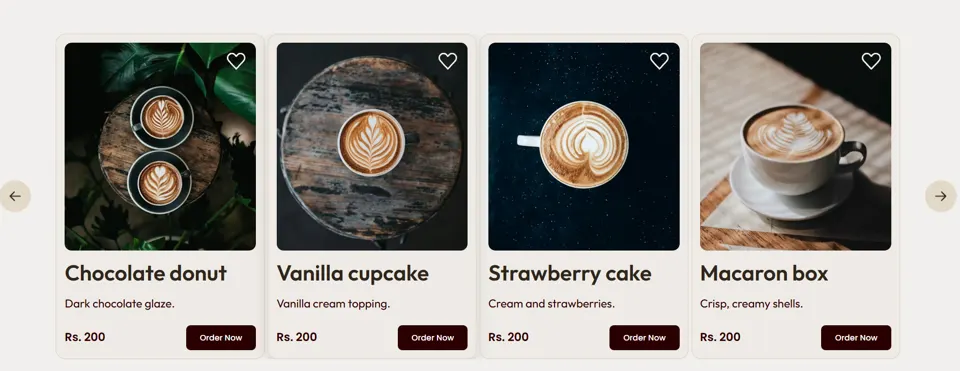
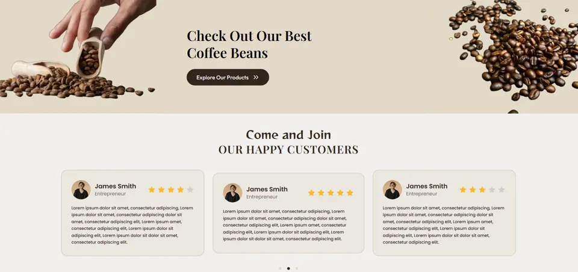
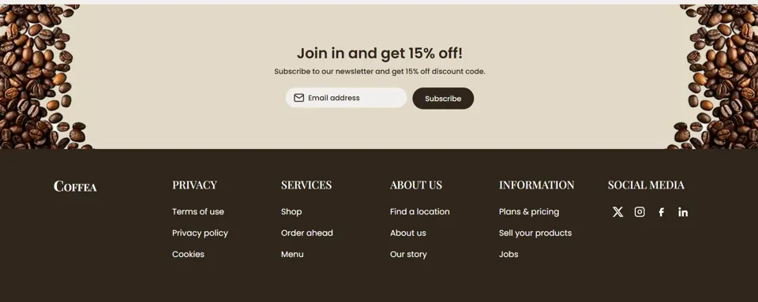

2026 · HTML5 y CSS3
Coffea, landing page de una cafetería
Una página para que los clientes vean la carta, hagan su pedido y encuentren reseñas y contacto.

Problema
Una cafetería necesita mostrar sus productos y recibir pedidos sin que el cliente se pierda. Tenía que verse cálida, cargar rápido y dejar claro qué pedir y cómo contactar.
Proceso
Definí la estructura de arriba hacia abajo: inicio con llamado a pedir, categorías, productos destacados, reseñas, suscripción y pie de página. Elegí una paleta de marrones y beige, y una tipografía serif para los títulos que da carácter de cafetería.
Fui maquetando sección por sección con HTML y CSS, probando cada una antes de pasar a la siguiente.
Solución




Resultado y aprendizajes
El resultado es una landing completa y consistente, con pedido, reseñas y contacto. Me sirvió para mejorar mi manejo de HTML y CSS y para entender cómo la jerarquía visual guía al usuario.
Si lo rehiciera, lo probaría con usuarios reales desde el prototipo y revisaría el contraste y la navegación por teclado desde el principio.